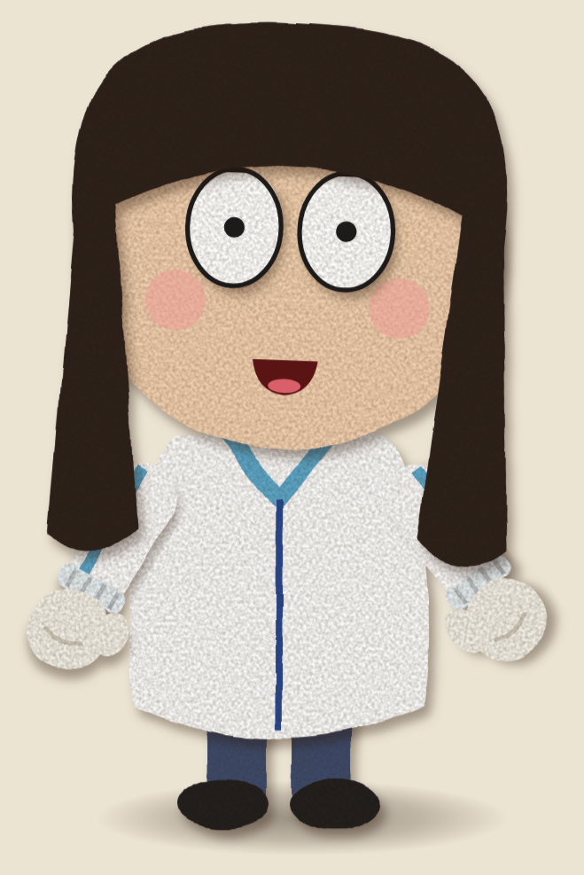
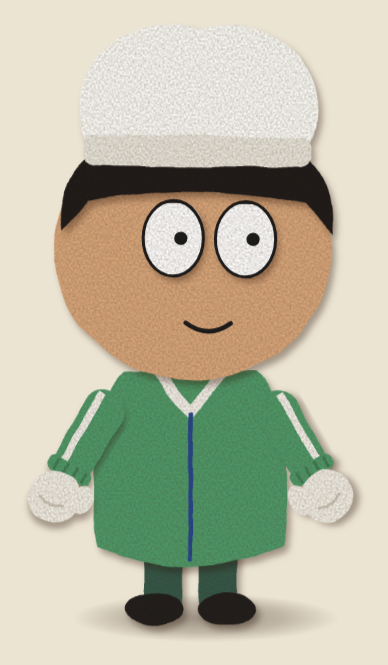
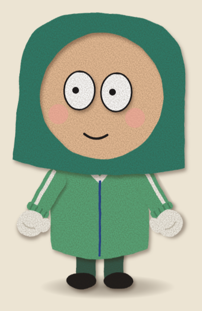

Losion, pelembap, minyak, atau tabir surya, 24 jam sebelumnya.
Vitamin C, vitamin E, glutation, atau obat pengencer dahak, 24 jam sebelumnya.
3 jam sebelum darah diambil.
2 jam sebelum pemeriksaan.
Telapak tangan boleh basahTunggu sampai pemeriksaan kulit selesai. Mandi sesudahnya.
Isi kuesioner
Timbang & tinggi badan
Kelembaban lengan bawahtidak sakit
Darah 3–5 mL± 1 sendok teh

